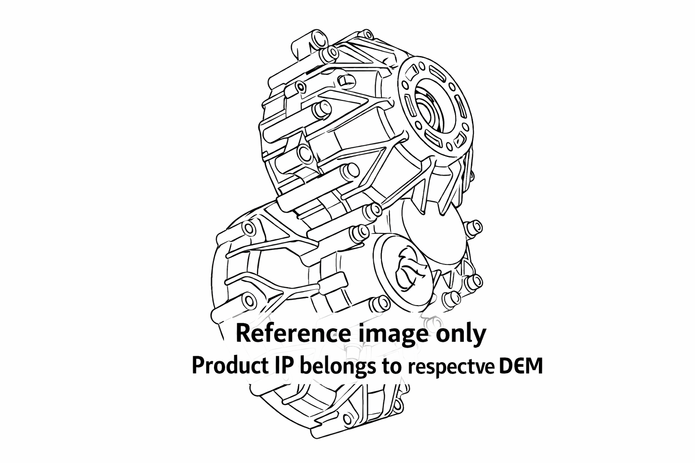

Client: Major Automotive OEM (Tata Transaxle)
3-Axis Spline Engagement & Dual Dynamometer
Automotive Transaxle Load & Endurance Test Rig
A transaxle combines a transmission, differential, and axle into one compact unit, commonly used in front-wheel-drive (FWD) or rear-engine vehicles. Designed an automated end-of-line test bed integrating a 3-axis precision spline engagement system for the input drive motor, dual-output dynamometer loading setups for speed/torque profiling, automated seal pressing, and pneumatic diaphragm pump evacuation for lube oil recovery.

Fig 1. Isometric View — Automotive Transaxle Load & Endurance Test Rig

Fig 2. Automotive Transaxle Unit Under Test (UUT)
Transaxle Testing Layout & Operating Procedures
01
Loading of Transaxle: Precision pallet loading and datum clamping of the transaxle unit.
02
Output Seal Pressing: Automated pressing of the oil seal on the output side of the transaxle.
03
Pneumatic Air Leak Testing: Cavity sealing verification using a calibrated air reservoir and pneumatic test setup.
04
Metered Lubricant Filling: Passed air-leak tested transaxles are filled with lubricating oil using a digital Flow Meter and Oil Transfer Port (OTP) adaptor.
05
Multi-Ratio Dynamometer Load Testing: Conducted at the output side of the transaxle at specified torque and speed profiles across gear ratios:
- Gear Shifter and Gear Selector of the transaxle are actuated manually or via an Automatic Gear Shifting (AGS) system.
- Input spline shaft on the transaxle is engaged to the spline adaptor (input drive motor) via a 3-axis positioning setup.
- Both left and right output shafts are simultaneously loaded by independent Dynamometers.
06
Straight & Inclined Oil Draining Station: Uses pneumatic actuation and a Diaphragm Pump to evacuate lubricating oil from the transaxle in both straight and inclined pallet orientations.
07
OTP Adaptor & Output Shaft Disengagement: Automated retraction of test couplings.
08
Unloading: Final release and unloading of the validated transaxle assembly.